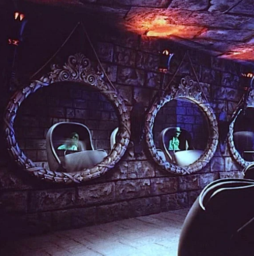
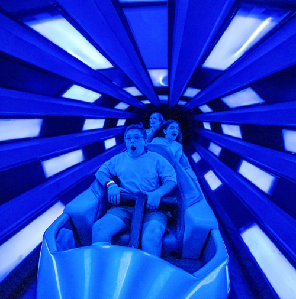
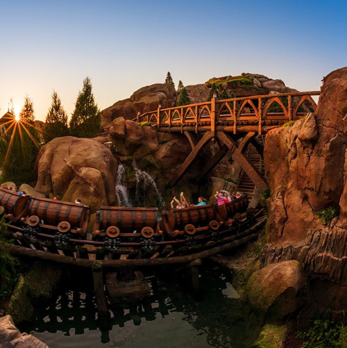

Park Rides & Attractions
Buzz Lightyear’s Space Ranger Spin is an interactive attraction in Tomorrowland that puts you right inside the world of Toy Story. As a Junior Space Ranger, you pilot a spinning star cruiser and use laser cannons to hit targets and defeat the Evil Emperor Zurg. It is a fun, real-life video game where you compete for the highest score to earn the legendary rank of Galactic Hero.

Buzz Lightyear’s Space Ranger Spin
The Haunted Mansion is a spooky and spectacular tour through a grand estate that is home to 999 happy haunts. Boarding a "Doom Buggy," you glide through eerie hallways and a ghostly ballroom where spirits from your favorite supernatural stories literally appear before your eyes. It is a masterpiece of classic special effects and dark humor.
The Haunted Mansion
Monsters, Inc. Laugh Floor is an interactive comedy show in Tomorrowland where you help Mike Wazowski and his team of monsters power the city of Monstropolis through laughter. Using advanced technology, the monsters on screen actually see and talk to the audience in real-time, making every performance a one-of-a-kind experience.

Monsters INC. Laugh Floor
Space Mountain is an iconic indoor roller coaster in Tomorrowland that blasts you into the furthest reaches of outer space. Boarding a sleek rocket ship, you race through the pitch-black darkness filled with glowing stars, shooting meteors, and galactic sound effects.
Space Mountain
Seven Dwarfs Mine Train is a family-friendly roller coaster in Fantasyland that takes you deep inside the sparkling diamond mine from Snow White and the Seven Dwarfs. The ride features innovative cars that sway back and forth, letting you feel every twist and turn as you race through the mountain.
Seven Dwarfs Mine Train
Tiana’s Bayou Adventure is a musical boat ride in Frontierland that picks up where the movie The Princess and the Frog left off. As you float through the glowing Louisiana bayou, you join Princess Tiana and Louis the alligator as they search for a missing ingredient for a spectacular Mardi Gras celebration.